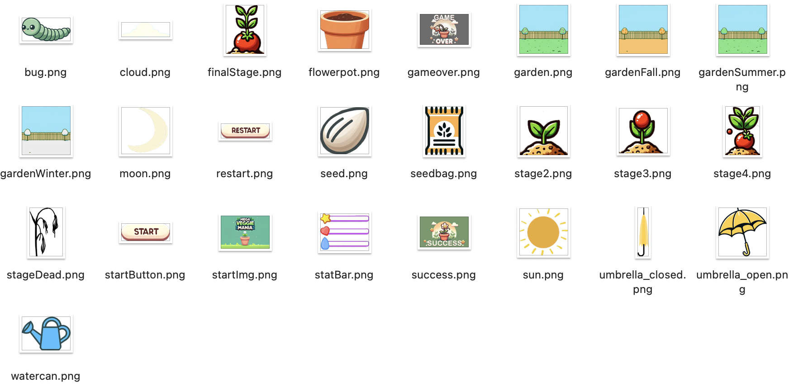

Project Overview
Role: Game Designer, Programmer, UI/Asset Designer
Collaborator: N/A - Individual Project
Tools Used:
- Eclipse
- Java
- Procreate
Duration: 1 Months (November 2023 - December 2023)
Project Video
Project Description
Mega Veggie Mania was developed as part of IAT 265 Introduction to Game Design and Development at SFU's Interactive Arts and Technology program. This 2D first-person farming simulation game was programmed entirely in Java and designed to deliver an engaging, progressively challenging gameplay experience.
Through the creation of custom game mechanics, UI elements, and original visual assets, the project blends intuitive interaction with playful aesthetics. Level modules and progression systems were designed to guide players subtly while maintaining freedom of exploration, ensuring a balanced mix of structure and discovery.
My Main Tasks in This Project:
- Game Mechanics & Level Design
- UI & Visual Asset Creation
- Gameplay Programming in Java
Game Mechanics & Level Design

I designed core farming interactions such as planting, watering, pest control, and harvesting to create a natural gameplay loop that mirrors the experience of nurturing real plants. The aim was to not only entertain but also prepare players for the kinds of challenges they might face in real-life plant care — from maintaining optimal moisture to protecting crops from pests.

The level modules were built around seasonal and environmental variations, each introducing a new challenge as game time progresses:
- Summer: High heat causes plants to lose moisture faster, requiring more frequent watering.
- Fall: Heavy rainfall increases soil moisture, so players must protect plants from over-watering by placing umbrellas over them.
- Winter: Cold slows plant growth, shifting the focus to upkeep and preparation while waiting for the next growth spurt.
- Night: Insects appear and damage crops, prompting players to react quickly to protect them.
Each challenge is introduced through a short, in-game note at the top left corner of the screen, briefly explaining the situation and giving hints on how to handle it. This gradual, time-based introduction ensures players are not overwhelmed early on, while still keeping gameplay fresh and engaging. The design encourages adaptive thinking and maintains interest by layering complexity over time, creating a satisfying learning curve.
UI & Visual Asset Creation
All UI elements and in-game visuals were designed for instant recognition while maintaining a consistent, friendly look. Assets were initially generated with ChatGPT, then refined in Procreate to ensure uniform color, line quality, and proportions. Icons, meters, and overlays were kept simple and clear so players can quickly assess crop health, water levels, and pest activity without interrupting their gameplay.
The overall art style follows a cute, hand-drawn approach with soft edges, bright colors, and playful proportions, aligning with the game's lighthearted farming theme. This style makes the experience approachable for casual players and lowers perceived difficulty, encouraging them to experiment and enjoy the process without feeling pressured.
Gameplay Programming in Java

The game's core systems — from the main loop to input handling — were fully built in Java. Crop growth, weather effects, and player actions were tied to the same game rules so that every visual change, like faster growth after watering or damage from pests, directly matched what was happening in the underlying logic. Player actions always felt responsive, with results appearing immediately in the crops' condition.
Event triggers added variety and kept the game feeling alive. For example, pests appeared only under specific conditions, like certain growth stages or times of day. These reactive elements encouraged players to adapt their strategies over time and prevented the gameplay from becoming repetitive.
Takeaways
This project took me through the full process of making a game from scratch — from brainstorming the initial idea, mapping out player actions, and storyboarding the concept, to creating the visuals and programming the systems in Java. I learned how important it is to think about how mechanics, visuals, and feedback connect to keep players engaged and guided without overwhelming them. On the technical side, programming the entire game in Java strengthened my ability to structure systems, manage game states, and implement event-driven features that make the world feel dynamic. Building the game step-by-step taught me the value of introducing challenges gradually, keeping controls intuitive, and making sure every action feels meaningful. Seeing the idea grow into a fully playable game gave me a much deeper understanding of how creativity and technical execution come together in game design.